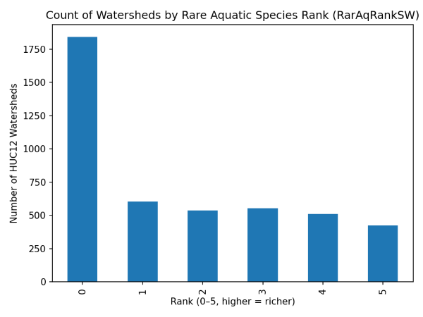
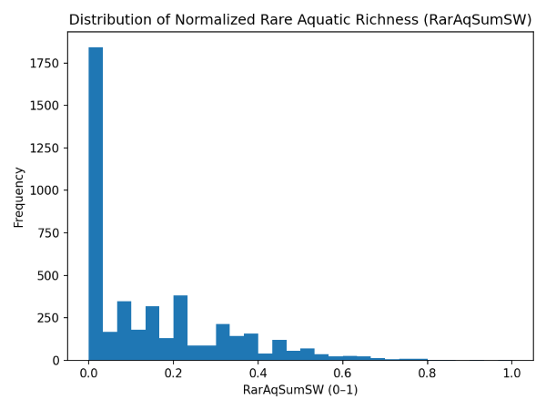
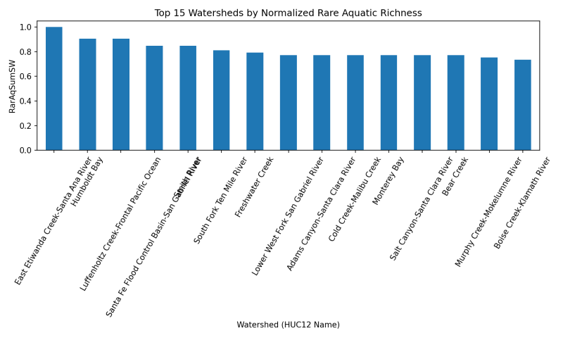
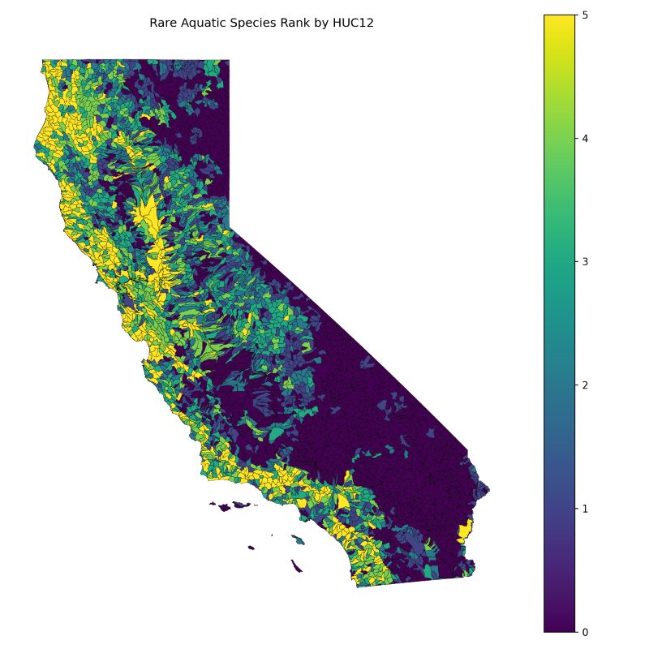
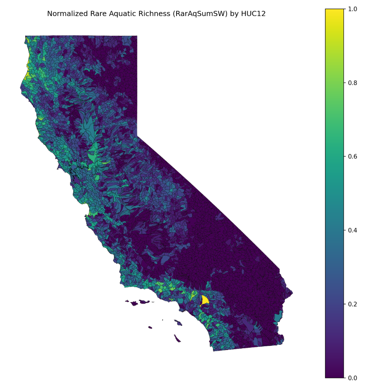

Project Overview
This project explores California’s aquatic rare species richness dataset (ACE ds2748) at the HUC12 watershed level. It includes exploratory data analysis (EDA) and static choropleth maps created using Python and GeoPandas. I have always enjoyed the outdoors and the intersection between my interests and data is GIS. My goal was to start working on a project that introduces me to GIS concepts while allowing me to expand and showcase my data skills as well. Source: State of California Aquatic Species Richness Data
I structured the project as a reproducible pipeline. I loaded the ACE ds2748 CSV with explicit types (HUC12 as string to preserve IDs), ran basic validation, and produced five quick figures for exploratory analysis (rank distribution, richness histogram, two cross-taxon checks, and a top-15 bar chart). For mapping, I chose GeoJSON over Shapefile to simplify file handling in Python and for future web use. Because my GeoJSON contained only boundaries, I joined attributes from the CSV on HUC12, normalizing both keys as strings to avoid float/‘.0’ mismatches. I saved two static choropleths—rank and continuous richness—using GeoPandas, with simple outlines for readability and legends enabled. Finally, I published a lightweight HTML page in my GitHub Pages repo, referencing the generated figures by relative path. Version control tracked all changes; I excluded large source data via .gitignore to keep the repo fast and focused on outputs. My goal is to create a workflow that would allow me to easily produce these figures and others from similar datasets.

RarAqRankSW).I started by looking at how watersheds distribute across rarity ranks. Most HUC12s fall into low–mid tiers, with a thinner tail at Rank 5. Using this to inform the rest of the analysis, I realized that while hotspots exist, they are not the norm.

RarAqSumSW).The normalized richness (RarAqSumSW) is right-skewed: a small number of the watersheds hold relatively high richness. With the knowledge of the skew, I felt that using quantiles as a classification choice would be better than others, such as intervas.
Top Watersheds

RarAqSumSW.Next, I pulled the top 15 HUC12s by normalized richness. This decision was more exploratory in nature, as I was simply interested in richest watersheds in the state. An additional benefit is that this shortlist provides 15 places where limited resources could be applied to have the most impact. Supporting these 15 rich watersheds would support the conservation of a greater number of species.
I published two views: a categorical rank map for quick scanning and a continuous richness map for nuance. Together, they balance readability with detail. In QGIS, I compared quantiles vs. Jenks to see how classification shifts perception. At this portion of the project I am working to publish my QGIS and documentation of a comparison of working with python and the QGIS environment online.


RarAqSumSW) by HUC12.